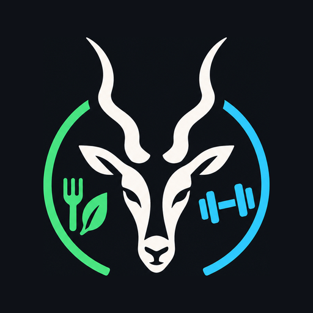

Binnenkort
Eet. Train.
Groei.
Kudu Fit houdt je voeding en je trainingen bij in één app, en rekent je doelen uit op basis van je trainingsdagen. Zonder advertenties.
Aan het opwarmen…laatste set
Voeding
Barcode scannen, macro's in één oogopslag en je dagdoel altijd zichtbaar.
Training
Sets, reps en gewichten loggen en je progressie per oefening volgen.